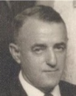

GMBH Tree - Family Card
GMBH Tree - Family Card
Philip L. Denomme(28 Feb 1876 - 28 Jun 1943)Charles Laporte(4 Jul 1871 - 10 Aug 1954)
Anne Durand(17 Oct 1874 - 24 Mar 1948)Marguerite Durand(17 Nov 1875 - 19 Jan 1951)
m. 13 Jun 1931, St-Pierre-aux-Bouleaux, St-Joseph, Hay Twp, Huron Co, Ontario, Canada


b. 6 Apr 1910, St. Joseph, Huron Co, Ontario, Canada
d. 17 Mar 1989, Pain Court, Ontario, Canada
br. Pain Court, Chatham-Kent Municipality, Ontario, Canada
occ.
edu.
rel.
bp.
cen.

b. 21 Sep 1913, St. Joseph, Huron Co, Ontario, Canada
d. 17 Oct 1971, Pain Court, Ontario, Canada
br. Pain Court, Chatham-Kent Municipality, Ontario, Canada
occ.
edu.
rel.
bp.
cen.
Children
Joseph Laurence Denomme(1931 - 16 Dec 2012)
Charles Philip Denomme(26 Apr 1933 - 9 May 2007)
Margaret Ann Denomme(17 Mar 1935 - 12 Dec 2011)
Father Leo Denomme(2 Jul 1941 - 28 Feb 2000)
Robert R (Bob) Denomme(8 Apr 1943 - 18 Aug 1998)
Cyril Denomme(1937 - bef 2013)
Marie-Therese (Terri) Denomme(1948 - 13 Sep 2013)
Cecile A. Denomme(1952 - 1981)